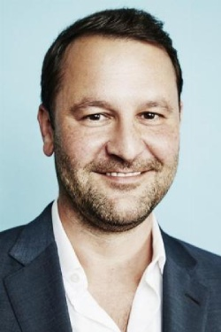

Dan Fogelman es guionista, productor y director proveniente de Nueva Jersey, Estados Unidos. Fogelman deseaba ser guionista, es por esta razón que se muda a Hollywood. Su primer trabajo fue como escritor en la revista de programación televisiva "TV Guide". Mientras tanto, escribía el guión de una película que nunca se produjo pero le permitió ser contratado en Pixar para guionar la película "Cars" (2006). Su carrera de guinista progresaba trabajando en las películas animadas "Bolt" (2008) y "Enredados" (2010). En 2009 comenzó con uno de sus proyectos más reconocidos: escribir el guión de la comedia romántica "Crazy, Stupid, Love" (2011). En su siguiente proyecto, Fogelman hace su debut como director en la película "Danny Collins" (2015), protagonizada por Al Pacino. Además es el creador y productor ejecutivo de series como la comedia medieval "Galavant" (2015), la comedia dramática "This Is Us" (2016) y la sitcom "The Neighbors" (2012).
